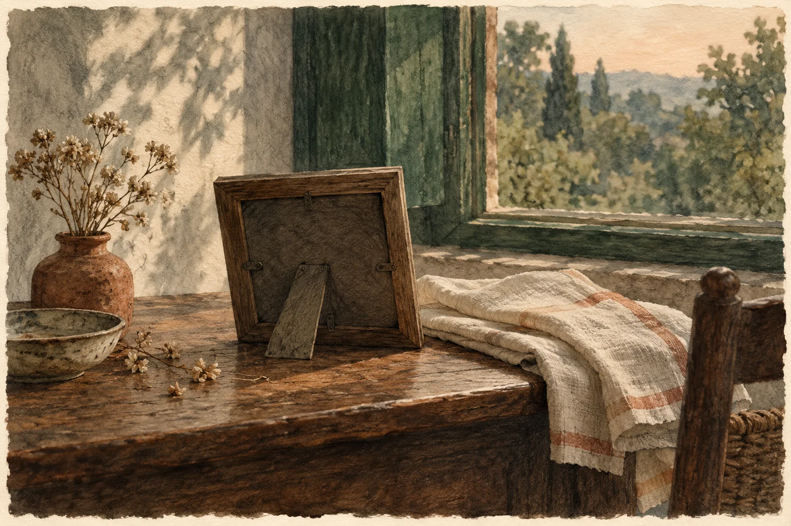

ମୂଳ କବିତା · ଓଡ଼ିଆ
ତୁମ ଛବି

-----------------
ତୁମ ଜନ୍ମଦିନ ଭୁଲି ଯାଇଛି
ତୁମେ ବି ମନେ ପକେଇ ଦେଇନ
ସେତେବେଳେ,
ଆଜିର ଦିନରେ
ଆଜିକାଲିର ରିତିନୀତିରେ
ତୁମକୁ କିଛି ଉପହାର ଦେଇଥାଆନ୍ତି
କିଛି ନହେଲେ ଖଦଡ଼ ଖଣ୍ଡେ,
ମୋ ହାତରନ୍ଧା ଉପରେ
ନାକଟେକି ତୁମେ ହିଁ ବ୍ୟଙ୍ଗ
କରି ପାରିଥାଆନ୍ତ
ତର୍କ ବିତର୍କରେ,
ସବୁ ଉତ୍ସବ ସଫଳ ହେଇଥାଆନ୍ତା
ମୁଁ ଦଶ କୁ ଶହେ କହି
କେବଳ ତୁମରି ପାଖରେ ,
ମିଛି ମିଛିକା ଅଭିନୟ କରିଥାଆନ୍ତି
ଜଗତଜିତା ଅନୁଭବ କରିଥାଆନ୍ତି;
ତୁମେ ହିଁ ପଢ଼ିଥାଆନ୍ତ ଖୁଣ୍ଟେଇ ଖୁଣ୍ଟେଇ
ମୋର ଅନାବନା କବିତା ଯେତେ
ହଜିଯାଏ ଯାହା ରଫ୍ ଖାତାରେ
ତୁମେ ହିଁ ଅଧିକ ସ୍ନେହକରି
ଲଗାମ ଛଡ଼ା କରିଥିଲ,
ଜିଦ୍ କରି ମାଟିରେ ଗଡୁଥିଲି
ତୁମେ ହସୁଥିଲ, ପଡ଼ୋଶୀ ବି ହସୁଥିଲେ
ସେହିପରି ଅନେକ ଅଭିମାନ ଆଉ ଅଳି
ତୁମେ ଶୁଣିବାକୁ ବାଧ୍ୟ ହେଇଥାଆନ୍ତ
ଯାହା କେବଳ ତୁମରି ପାଖରେ
କହି ପାରିଥାଆନ୍ତି ମନ ଖୋଲି,
ଖାଇବାଠୁ ନେଇ ଆକାଶ ଯାଏଁ
ଏହିପରି ନେନ୍ଥି ନେନ୍ଥି ଭାବନା
ଏତେ ଅସରନ୍ତି କଥା ପାଇଁ
ଜୀବନଟେ ଊଣା!
କିଏ ବେଳ ପାଏ?
ସେ ଅବକାଶ ତୁମେ ବି ପାଇନ...
ଅବସର ସମୟ ବି ଦେଇନି !
ହଁ ମୁଁ ମନ୍ଦିର ଯାଏ, ଏବେ ବି ହାତଟେକେ,
ସିଖେଇ ଦେଇଥିଲ ଯାହା, ଯେମିତି
ଠିକ୍ ସେମିତି,
ଏଥର ଦେବାର ପାଳି ତ ମୋର ଥିଲା,
ହେଲେ ତୁମେ ନ ଥିଲ...
ଦୁଇ ଦଶନ୍ଧିରେ କେବେହେଲେ
ତୁମ ଛବିକୁ ଫୁଲ ଟିକେ ବି ଦେଇନି
କି ଧୂପ ଦେଇନି,
କେମିତି ମାଆ ବାପାଙ୍କୁ
କାନ୍ଥରେ ଝୁଲେଇ ହୁଏ?
ଏତକ ସାହସ ଜୁଟେଇ ପାରିନି ଏଯାଏଁ
ଏତକ ଉଦ୍ୟମ ବାକି ରହିଥାଉ!
-------------------------
_ଶକୁନ୍ତଳା
ମୂଳ ପ୍ରକାଶନ ପଢ଼ନ୍ତୁ ↗
କବିତାଗୁଡ଼ିକ ମୂଳ ଭାଷାରେ ରହିଛି। ଭାଷା ବଦଳାଇଲେ ୱେବ୍ସାଇଟ୍ର ପରିଚୟ ଓ ନିର୍ଦ୍ଦେଶ ବଦଳିବ।